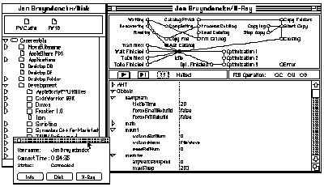
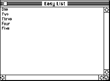
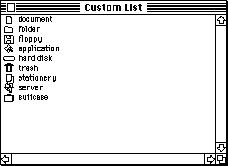
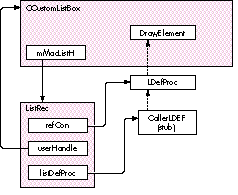
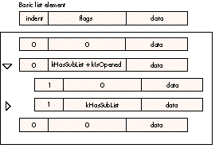
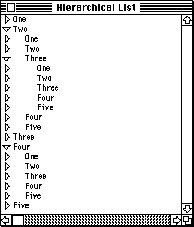
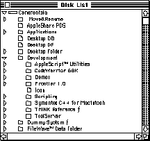

The article "Displaying Hierarchical Lists" in develop Issue 18 showed how to use the
List Manager to build and display lists of hierarchical data with triangular
"twist-down" buttons for expanding and collapsing sublists (similar to the ones the
Finder uses for displaying and hiding the contents of folders in a list view). In this
article, we take an object-oriented approach to implementing these and other custom
lists, using the PowerPlant application framework by Metrowerks. Using subclass
inheritance to build small classes on top of each other makes incremental development
easy and straightforward.
Recently, I found myself working on a project that needed hierarchical lists: a remote
debugger for a network-based software distribution application. The product,
FileWave, creates a "virtual disk" volume on the user's client machine and manages its
contents remotely from a central server. The debugger, called TheRaven, can retrieve
file and folder information from the client machine and display it in a Finder-like
hierarchical view (see Figure 1).
Martin Minow's article "Displaying Hierarchical Lists" (develop Issue 18) was an
excellent starting point, but Martin's implementation had some features that made it
unsuitable for my particular application. Most important, Martin built his
hierarchical lists completely in memory before displaying them -- not very practical
when working over a network. I could have modified Martin's code to remove that
restriction, but the result wouldn't have been very clean. Since we were using the
object-oriented PowerPlant application framework by Metrowerks, I decided to try to
develop an object-oriented implementation for hierarchical lists.
One of the advantages of object-oriented programming is that it enables you to build up
your implementation in incremental steps. PowerPlant's collection of small,
independent classes can be combined to build new classes with rich features, providing
a strong foundation for software development. And, of course, using PowerPlant gave
me an opportunity to try out the great Metrowerks CodeWarrior programming
environment.
This issue's CD contains some of the results of my development efforts. On it, you'll
find a collection of general-purpose classes for implementing lists with icons,
hierarchical lists, and other useful possibilities. You can use these as a basis for
developing more specialized subclasses of your own; the CD includes some examples of
those, as well.

Figure 1. TheRaven
The CD contains two project files: one for creating a 680x0 application and one for
the native PowerPC version. In both projects, only the main segment contains my own
code; all the other source files are taken from the PowerPlant development
framework.*
This article assumes that you understand the List Manager and how to use it, and that
you have at least a casual acquaintance with object-oriented programming in general
and C++ in particular.
In PowerPlant, everything that appears on the screen is apane, an instance of the
built-in class LPane. Like a view in MacApp, a pane can be anything from a plain
rectangle to a scroll bar, a picture, or a radio button. A control is a pane, as is an icon
button, a static text item, or a scrolling picture. Even LWindow, the class to which
windows themselves belong, is a subclass of LPane.
Typically, a window consists of an instance of class LWindow with one or more
subpanes derived from LPane. In our examples, our windows will have only one pane,
an instance of PowerPlant's built-in class LListBox. This type of pane uses the
Macintosh List Manager to display a list of objects. Each of our examples will define a
new subclass of LListBox with additional or modified properties and behavior. All it
takes to define such a class is to select an existing class, override its drawing method
(and maybe a couple of others), and possibly create a new resource template.
Our first example implements a simple window showing the list of words "One"
through "Five" (see Figure 2). This may not seem like a big deal, but it's a good
illustration of the power of object- oriented programming.

Figure 2. An easy list
If we started from scratch, how many lines of code would this application take? Well,
we'd have to set up a menu, create a window, and then write an event loop to handle
dragging, window resizing, and so on. Add in the List Manager calls, and we'd be lucky
to do it all in fewer than 100 lines. With PowerPlant, all those details are handled for
us by the predefined class LApplication. All we need to do is define a subclass,
CListApp, with a menu command for creating our list window. One line of code in our
subclass's ObeyCommand method suffices to create the window:
LWindow::CreateWindow(EasyList_PPob, this);
This invokes a static method of class LWindow to create the window from a template
resource. EasyList_PPob is the resource ID; the exact description of the window is
contained in the resource, isolated from the code itself.
The resource definitions (Listing 1) give the details on the window's structure and
appearance. The familiar window template resource ('WIND') is accompanied by a
PowerPlant object resource ('PPob') giving extra information on the window and the
panes it encloses (see "'PPob' Resources"). The 'PPob' is simply a list of views and
panes, each specified with the keyword ObjectData. Panes can be nested to any depth,
with each new level delimited by the keywords BeginSubs and EndSubs. In our case,
the window view encloses just one pane, representing the list box.
An object-oriented application framework like PowerPlant is so powerful that these
two resources are all we need to describe our window and its list pane. With just one
line of code to create the window, we get all the standard behavior for free: dragging
and resizing the window, scrolling the list, and selecting items with the mouse. We can
have multiple windows with the same list, and can use the List Manager for
manipulations like adding or removing items.
But, of course, we won't stop there. In the following examples, we'll override the
standard behavior by creating a series of subclasses. The resources in each case will
be minor variations on the ones in Listing 1; the main difference is that we'll use a
subclass instead of one of the standard classes.
Listing 1. Resources for easy list
resource 'WIND' (EasyList_WIND, purgeable) {
{47, 17, 247, 317},
documentProc, // standard window with size box
visible, goAway,
0x0, // refCon
"Easy List",
noAutoCenter
};
resource 'PPob' (EasyList_PPob, purgeable) {{
ObjectData {Window {
EasyList_WIND,
regular, hasCloseBox, hasTitleBar, hasResize, hasSizeBox,
noZoom, hasShowNew, enabled, hasTarget, hasGetSelectClick,
noHideOnSuspend, noDelaySelect, hasEraseOnUpdate,
100, 100, // minimum width, height
screenSize, screenSize, // maximum width, height
screenSize, screenSize, // standard width, height
0 // userCon
}},
BeginSubs {},
ObjectData {ListBox {
1001, // paneID
{302, 202}, // {width, height}
visible, enabled,
bound, bound, bound, bound, // edges bound to superview
-1, -1, 0, // left, top, userRefCon
defaultSuperView,
hasHorizScroll, hasVertScroll, hasGrowBox, noFocusBox,
0, kGeneva10_Txtr, // double-click msg, text traits
textList, // LDEF ID
{"One", "Two", "Three", "Four", "Five"}
// some sample data
}},
EndSubs {}
The previous example used the standard behavior of PowerPlant's built-in class
LListBox. We can make our list much more attractive by adding an icon in front of each
element. To do this, we'll define two new subclasses of LListBox.
Actually, one subclass would have been enough to do the job. But the most important
thing I learned in my university software engineering courses was, "Be a toolsmith."
Following this advice, I've chosen to define two subclasses instead of just one. The
first, CCustomListBox, is a versatile, general-purpose tool that allows a list to hold
any kind of data instead of just text. The items in the list can be structures of
arbitrary size holding any kind of information we want. The CCustomListBox class
includes methods for displaying this information easily and conveniently.
The second subclass, CMyCustomListBox, is just a demo class to show off the
capabilities of the first. It inherits the general behavior of CCustomListBox and
specializes it to hold two pieces of information for each list item: an icon (actually,
just the icon's resource ID) and a piece of text (see Figure 3).

Figure 3. A custom list
'PPOB' RESOURCES BY AVI RAPPAPORT
Resources of type 'PPob' (PowerPlant object) represent objects that belong to
PowerPlant's predefined class LPane and its derived subclasses. Their structure is
fully described in the section "Creating Panes" (Chapter 9 in the August 1994
release) of the PowerPlant manual supplied on the CodeWarrior CD. Each 'PPob'
resource describes an entire containment hierarchy -- for example, an enclosing
pane, then a scrollable "view," scrollers, and the window's buttons, list boxes, text
fields, and radio button groups. You can also add new types to represent your own
custom subclasses of LPane.
Object layering makes 'PPob' resources too complex for ResEdit's template
mechanism, so you have to use Apple's Rez, Metrowerks' PowerPlant Constructor
(provided on the CodeWarrior CD), or Mathemaesthetics' Resorcerer to edit them. The
listings in this article are in Rez format. Note that Rez files must be compiled
separately to be included in a CodeWarrior project, as the current version of
CodeWarrior cannot compile them automatically.
Resorcerer provides a forms-based interface. To use it, copy the file PowerPlant
Resorcerer TMPLs from the PowerPlant Resources folder to Resorcerer's Private
Templates folder. The 'PPob' editor will be available the next time you start
Resorcerer.
PowerPlant Constructor uses more of a point-and-click interface to display the user
view for each object in a 'PPob' resource. You can edit the values in the Attributes
palette and Field windows and view the results on the screen. For instructions on the
specific menu items involved, see the Constructor User's Guide on the CodeWarrior
CD. Using PowerPlant and the 'PPob' resources together, you can create clean,
standard interfaces for your programs, using the best of Apple's new technologies. This
allows you to be more creative about the design of your programs and concentrate on
adding new features to make the best possible applications.
CREATING A LIST
The template ('PPob') resource for our list pane has the same format as the standard
one shown in Listing 1, but without the sample data (the strings "One" through
"Five"), since we're now allowing the list to contain any kind of data instead of just
text. This time, though, we want the window's list pane to be an instance of ourcustom
class, CMyCustomListBox, instead of PowerPlant's predefined class LListBox.
The job of creating a new window at run time from a template resource is handled by a
part of the PowerPlant system called thereanimator. We need to tell the reanimator
to use our own creator method when creating the window's list pane from the template,
in place of the standard one for class LListBox.
We establish the connection between our template resource and the creator method that
will use it by assigning the template a uniquetag. We then register the tag with the
PowerPlantregistrar, telling it to associate that tag with a particular creator method.
We create the tag by adding the line
ClassAlias {'mlst'},
to our 'PPob' resource, before the definition of the list pane. (All we need is an alias,
because the resource defining our custom class has the same structure as that of the
standard LListBox class.) We then define a constant to represent this tag in our
CMyCustomListBox class:
public:
enum {
classID = 'mlst'
};
Now we can register the tag with the PowerPlant registrar as part of our application's
initialization code:
URegistrar::RegisterClass(CMyCustomListBox::classID,
(ClassCreatorFunc) CMyCustomListBox::CreateFromStream);
(A convenient place to do this is in our application object's constructor method,
CListApp::CListApp.) Later, when we use our template to create a new object --
LWindow::CreateWindow(CustomList_PPob, this);
-- PowerPlant's reanimator will recognize the tag and will call the specified creator
method, CMyCustomListBox::CreateFromStream, to create an instance of our class. We
define the creator method as follows:
CMyCustomListBox* CMyCustomListBox::CreateFromStream (LStream
*inStream)
{
return (new CMyCustomListBox(inStream));
}
This simply passes along the parameter it receives, inStream, to the class constructor
method, CMyCustomListBox::CMyCustomListBox. This method in turn calls the
superclass constructor method, CCustomListBox::CCustomListBox, and then adds some
further initialization of its own:
CMyCustomListBox::CMyCustomListBox(LStream *inStream) :
CCustomListBox(inStream)
{
// Additional initialization for class CMyCustomListBox
...
}
The extra initialization code calls the Macintosh List Manager to add cells to the list
and initializes the contents of each cell. In some cases (though not in this example), it
might need to read in additional resource data. This is also the ideal place to initialize
the new object's member variables.
CUSTOMIZING THE LIST DEFINITION PROCEDURE
The List Manager calls alist definition procedure to display each cell of a list on the
screen (seeInside Macintosh: More Macintosh Toolbox, Chapter 4). The procedure is
supplied as a code resource of type 'LDEF'. In our case, we want to keep the display code
inside the application, so that we can define it as a method of our custom subclass.
Figure 4 illustrates our scheme for accomplishing this.

Figure 4. Customizing the list definition procedure
The LDEF that we supply to the List Manager is just a stub that calls the real one
defined in our application. We use the refCon field of the list record to hold a "callback
pointer" to the real definition procedure; the userHandle field holds a pointer back to
the list object. The initialization method CCustomListBox::init sets all this up:
if (callerLDEFUPP == NULL)
// Create UPP for LDEF callback.
callerLDEFUPP = NewListDefProc(LDefProc);
// Put callback address in refCon.
(*mMacListH)->refCon = (long) callerLDEFUPP;
// Keep a pointer to self.
(*mMacListH)->userHandle = (Handle) this;
mMacListH is a member variable of LListBox containing a handle to the list record.
First we create a universal procedure pointer (UPP) to our callback function,
LDefProc, and store it in the list record's refCon field; then we save a pointer to the
list object itself ("this") in the userHandle field. Finally, we load the stub LDEF from
the resource file, save its handle in the listDefProc field of the list record, and make it
unpurgeable from the heap.
Listing 2 shows the code of our callback function and the subsidiary methods it calls.
The callback function, LDefProc, sets up the A5 world, looks in the list's data for the
contents of the cell to be drawn, and calls the list object's member function
DrawElement to draw it. DrawElement clears the cell's rectangle to prepare for
drawing, makes sure that the cell's contents aren't empty, and calls another member
function, DrawElementSelf, to do the actual drawing. Then DrawElement checks its
lSelect parameter to see whether to highlight the cell and, if so, inverts the cell's
rectangle.
Listing 2. Custom list definition procedure for CCustomListBox
static pascal void LDefProc (short lMessage, Boolean lSelect,
Rect *lRect, Cell lCell,
unsigned short lDataOffset,
unsigned short lDataLen,
ListHandle lHandle)
// Custom list definition procedure for CCustomListBox.
// Called by the LDEF stub; returns control back to class method
// DrawElement to do the actual drawing.
{
// Ignore init and dispose messages.
if ((lMessage == lInitMsg) || (lMessage == lCloseMsg))
return;
// Set up application's A5 so that we can access global
// variables.
long savedA5 = ::SetCurrentA5();
// Get pointer to list object from userHandle field of list
// record.
CCustomListBox *self =
(CCustomListBox*) (*lHandle)->userHandle;
// Get handle to cell data.
Handle h = (*self->mMacListH)->cells;
char saveState = ::HGetState(h);
::HLock(h);
// Find and draw cell contents.
void *lElement = (void*) (*h + lDataOffset);
self->DrawElement(lMessage, lSelect, lRect, lElement, lDataLen);
// Restore previous handle state and A5.
::HSetState(h, saveState);
::SetA5(savedA5);
}
void CCustomListBox::DrawElement (const short lMessage,
const Boolean lSelect,
const Rect *lRect,
const short lDataLen)
// Member function for responding to LDEF calls.
// Calls DrawElementSelf to draw a list element.
{
switch (lMessage) {
case lDrawMsg:
::EraseRect(lRect);
if (lDataLen == 0)
break;
DrawElementSelf(lRect, lElement, lDataLen);
if (!lSelect)
break;
case lHiliteMsg:
::InvertRect(lRect);
break;
}
}
void CCustomListBox::DrawElementSelf (const Rect *lRect,
const void *lElement,
const short lDataLen)
// Draw contents of a single list element on the screen.
// Default version just draws text; override for other types of data.
{
::MoveTo(lRect->left + 2, lRect->top + 9);
::DrawText(lElement, 0, lDataLen);
}
The default version of DrawElementSelf, defined in our CCustomListBox class, just
draws a simple piece of text for the contents of a cell. More specialized subclasses,
such as CMyCustomListBox, can override this method to draw other types of cell
contents or to display them in different ways. (In unusual cases, a subclass might want
to override the calling method, DrawElement -- to redefine the way highlighting is
done, for example.) Both DrawElement and DrawElementSelf are defined as virtual
methods, ensuring that all calls are directed to the proper version for a particular
class of list. This allows our application to support list boxes of many different kinds
simultaneously, with each going through the same general LDEF, but ultimately calling
its own specialized version of the drawing method.
As an example, Listing 3 shows the DrawElementSelf method for our class
CMyCustomListBox. Each cell of the list displays both a small icon and a text label, as
we saw earlier in Figure 3. The cell data in the List Manager's list record structure
consists of the icon's resource ID (resource type 'SICN') and a Pascal-format string
specifying the text:
typedef struct {
short iconID;
Str255 name;
} MyCustomDataRec, *MyCustomDataRecPtr;
The DrawElementSelf method calculates a 16-by-16-pixel rectangle for the icon,
plots it with CopyBits, and then draws the text. There's no need to override the
DrawElement method, since the standard form of highlighting is all we need.
Our next example is a hierarchical "twist-down" list like those in Martin Minow's
Issue 18 article. Our version lacks a few of the more advanced features of Martin's
-- for instance, it can't accommodate script systems like Hebrew and Arabic by
displaying its twist-down buttons on the right instead of the left -- but it's essentially
similar. The important implementation difference is that a sublist doesn't have to be
present in memory before it's displayed: the contents are fetched when the sublist is
expanded.
Listing 3. Drawing method for CMyCustomListBox
void CMyCustomListBox::DrawElementSelf (const Rect *lRect,
const void *lElement,
const short lDataLen)
{
Rect sicnBox;
MyCustomDataRecPtr cellData = (MyCustomDataRecPtr) lElement;
sicnBox.left = lRect->left + 3;
sicnBox.top = lRect->top - 1;
sicnBox.right = sicnBox.left + 16;
sicnBox.bottom = sicnBox.top + 16;
Handle h = ::GetResource('SICN', cellData->iconID);
if (h != NULL) {
char saveState = ::HGetState(h);
::HLock(h);
BitMap srcBits = { *h, 2, // baseAddr, rowBytes
{0, 0, 16, 16} }; // bounds
GrafPtr port;
::GetPort(&port);
::CopyBits(&srcBits, &(*port).portBits, &srcBits.bounds,
&sicnBox, srcCopy, NULL);
::HSetState(h, saveState);
}
::MoveTo(lRect->left + 24, lRect->top + 10);
::DrawString(cellData->name);
}
Figure 5 shows the basic data structure representing a twist-down list. Each cell has
an indentation level and a flag byte, followed by a variable-length field holding the
cell's data. The kHasSubList flag in the flag byte tells whether the cell has a sublist
associated with it; if so, the kIsOpened flag indicates whether the sublist is currently
open (expanded) or closed (collapsed). Cells with a sublist will be drawn with a
triangular twist-down button pointing to the right if the sublist is currently closed,
or down if it's open.
To expand or collapse a cell's sublist when the user clicks the triangular button, we
override the list's ClickSelf method (inherited from the built-in PowerPlant class
LListBox). Expanding a cell adds new cells to the list following it, with an indentation
level that's 1 greater than its own. Collapsing a cell scans forward through the list and
removes all immediately succeeding cells with higher indentation levels. The detailed
code is too involved to show here, but if you're interested, you can find it on the CD in
the file CTwistDownListBox.cp.

Figure 5. Structure of a hierarchical list
Listing 4 shows the redefined version of the DrawElementSelf method, inherited from
CCustomListBox. First we check the cell's flags to see if it has a sublist; if so, we draw
the triangular button in the appropriate form, depending on whether the sublist is
open, closed, or in transition. The actual drawing of the cell's contents is factored out
into a separate method, DrawTwistedElement: this allows subclasses to override just
the drawing routine itself, without having to duplicate the logic for drawing the
triangle as well.
A SIMPLE EXAMPLE
The class CMyHierListBox is a subclass of CTwistDownListBox, strictly for
demonstration purposes. It isn't a particularly realistic example, but it does show how
to specialize CTwistDownListBox to implement a simple hierarchical list. Each level of
the hierarchy just consists of the words "One" through "Five" (see Figure 6). Every
cell automatically has a sublist; you can keep opening sublists as long as you like, to
unlimited depth (or until you run out of memory, anyway!).

Figure 6. A hierarchical list
Listing 4. Drawing method for CTwistDownListBox
void CTwistDownListBox::DrawElementSelf (const Rect *lRect,
const void *lElement,
const short lDataLen)
// Draw a single list cell on the screen.
// Checks flags and draws triangular button if needed;
// calls DrawTwistedElement to draw cell contents.
{
TwistDownRecPtr twistElement = (TwistDownRecPtr) lElement;
if (TestTDFlag(twistElement->flags, kHasSubList)) {
PolyHandle aPoly = NULL;
aPoly = TestTDFlag(twistElement->flags, kIsOpened) ?
sOpenedPoly : sClosedPoly;
if (TestTDFlag(twistElement->flags, kDrawIntermediate))
aPoly = sIntermediatePoly;
if (aPoly)
DrawTriangle(aPoly, TestTDFlag(twistElement->flags,
kDrawFilled), lRect->top + 1,
lRect->left + kTriangleOutsideGap);
}
// Adjust pen position for triangle and indent.
::MoveTo(lRect->left + triangleWidth + 2 +
twistElement->indent * kIndentOffset, lRect->top + 10);
DrawTwistedElement(lRect, twistElement, lDataLen);
}
void CTwistDownListBox::DrawTwistedElement
(const Rect *lRect, const TwistDownRecPtr twistElement,
const short lDataLen)
// Draw contents of a single list element.
// Default version just draws text; override for other types of data.
{
::DrawText(twistElement->data, 0, lDataLen - TwistDownRecSize);
}
The only method CMyHierListBox needs to redefine is ExpandElement (see Listing 5).
The new version simply adds five new rows of dummy data following the cell being
expanded. We don't have to override any other methods, since the superclass,
CTwistDownListBox, already implements text elements by default. (For simplicity and
clarity, we've simply hard-coded the words "One" through "Five" directly into the
program itself; in real life, we would want to define them as resources to make
modification and localization easier.)
A MORE INTERESTING EXAMPLE
This example is borrowed directly from Martin Minow's article. CMyDiskListBox is a
subclass of CTwistDownListBox that displays the folder and file hierarchy on all
currently mounted disk volumes, with each line preceded by a small icon as in our
earlier CMyCustomListBox example (see Figure 7).
Listing 5. Cell expansion method for CMyHierListBox
static StringPtr myElements[] = {
"\pOne", "\pTwo", "\pThree", "\pFour", "\pFive"
};
void CMyHierListBox::ExpandElement (const Cell theCell)
{
short num = sizeof(myElements) / sizeof(StringPtr),
i,
indent = 0;
Cell cell = {0, 0};
Byte buffer[100];
TwistDownRecPtr thisTwist =
(TwistDownRecPtr) GetCellPtr(theCell);
TwistDownRecPtr anElement = (TwistDownRecPtr) buffer;
if (thisTwist)
indent = thisTwist->indent + 1;
::LAddRow(num, theCell.v + 1, mMacListH);
for (cell.v = theCell.v + 1, i = 0; i < num; i++, cell.v++) {
anElement->indent = indent;
anElement->flags = 0x01; // has sublist
::memcpy(anElement->data, myElements[i] + 1,
*myElements[i]);
::LSetCell(anElement,
sizeof(TwistDownRec) - 2 + *myElements[i], cell,
mMacListH);
}
}

Figure 7. A disk list
The following structure contains the data for each cell of the list:
typedef struct {
TwistDownHeader hd;
long refNum;
char vRefNum;
Byte tag;
char name[2];
} DiskListRec, *DiskListPtr;
The data structure in the first field, TwistDownHeader, is inherited from the
superclass (CTwistDownListBox) and contains the indentation level and the flag byte.
Next come the file and volume reference numbers. The tag byte identifies this item as
either a file, a folder, or a volume. The name field actually has variable length: when
drawing the cell's contents, we know the total length of the cell data, so we can deduce
the true length of the name.
Space is at a premium when dealing with the List Manager, because of its 32K
limit on the total size of a list record and its associated cell data. That's why we've
saved a little space in the definition of the DiskListRec structure by making the
vRefNum field a character instead of a short integer. This sacrifices a bit of speed
when retrieving or storing the volume reference number, but avoids wasting an extra
byte for word alignment. For the same reason, we also specify 68000 alignment in our
Power Macintosh implementation.*
Because CMyDiskListBox draws more than just text in each cell of the list, it must
override the DrawTwistedElement method inherited from CTwistDownListBox. Listing
6 shows the new version, which reads in the appropriate small icon from the system
resource file, calls a subsidiary function, PlotSICN, to draw it, and then draws the text
to go with it.
We also need to override the ExpandElement operation to look up the contents of a
folder, using the file system calls PBHGetVInfo and PBGetCatInfo, and insert them in
the list. (Our constructor method calls this same function to initialize a newly created
list to the set of currently mounted volumes.) You'll find the code for this operation in
the file CMyDiskListBox.cp on the CD. The new ExpandElement method doesn't allocate
memory or do anything else that needs to be cleaned up later, so there's no need to
override its companion method, CollapseElement.
There's a change in the resource file, too: instead of just using a class alias, as we did
for our other example classes, we define our own resource template for
CMyDiskListBox.
case DiskListBox:
key literal longint = 'dlst';
PP_ListBoxData;
This definition is placed in a separatetemplate file, which must be defined in the tool
server script and exported, so that it will be included with PowerPlant's own
templates. We can then refer to our template by name when defining the 'PPob'
resource in our main resource description (.r) file:
ObjectData {DiskListBox {
...
}}
In this case, defining our own template yields the same results as using a class alias,
so it's just a matter of taste. But if you want flexibility, defining your own templates
is the way to go: you can add or change existing resource definitions to suit your own
classes. Just look at the various LPane subclass implementations in PowerPlant to see
how easy it is!
Listing 6. Drawing method for CMyDiskListBox
const short sicnID[] = { // system icon IDs
-3995, // tag_disk
-3999, // tag_folder
-4000 // tag_file
};
const Size DiskListRecSize = sizeof(DiskListRec) - 2;
// don't count the name field
void CMyDiskListBox::DrawTwistedElement
(const Rect *lRect, const TwistDownRecPtr lElement,
const short lDataLen)
// Draw contents of a single list element, including icon.
{
Point pen;
::GetPen(&pen);
Handle h =
::GetResource('SICN', sicnID[DiskListPtr(lElement)->tag]);
if (h != NULL) {
Rect box = {lRect->top - 2, pen.h, lRect->top + 16 - 2,
pen.h + 16};
::PlotSICN(&box, h);
}
::Move(21, 0);
::DrawText(DisListPtr(lElement)->name, 0,
lDataLen - DiskListRecSize);
}
static void PlotSICN (Rect *rect, Handle sicnList)
// Draw the icon for a list element.
{
GrafPtr port;
char saveState = ::HGetState(sicnList);
::HLock(sicnList);
BitMap srcBits = { *sicnList, 2, // baseAddr, rowBytes
{0, 0, 16, 16} }; // bounds
::GetPort(&port);
::CopyBits(&srcBits, &(*port).portBits, &srcBits.bounds, rect,
srcCopy, NULL);
::HSetState(sicnList, saveState);
}
I hope you can see by now that the object-oriented approach makes it easy to define
new kinds of hierarchical lists for your applications. The examples in this article are
just a starting point: the rest is up to you.
If you're a true object aficionado, you'll want to make your list elements full-fledged
objects instead of just simple data structures. You could modify our disk list example
to display its icons in color instead of black and white, or to use each application or
document's actual icon instead of the generic ones from the system resource file. Or
how about letting the user drag and drop files from one folder to another within the list
box? (PowerPlant provides predefined classes to support drag and drop, so building it
into your application is easier than you might think. I know, because I've done it.)
The possibilities are limited only by your imagination. So get to work and see whatyou
can dream up!
JAN BRUYNDONCKX (AppleLink WAVE.BEL) works at Wave Research in Belgium,
trying to create the killer application that will revolutionize software distribution
across networks. When not peering at TMON windows and telling everyone how
"interesting" they look, Jan can be found jumping off cliffs with a parasail. (If
parasails had a real operating system, they wouldn't crash into trees -- but they'd
also be less fun!) Jan's idea of a holiday is hiking through the Sahara Desert or
climbing mountains in Nepal. His favorite conversation topic at parties is the
similarities between classical opera and hard rock.*
Thanks to our technical reviewers Nitin Ganatra, Martin Minow, Avi Rappaport, and
Jeroen Schalk. *